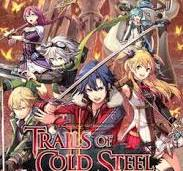
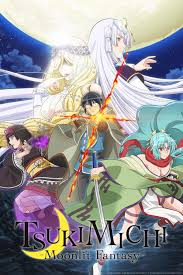

These are the hobbies that I enjoy that led to my pursuit of Software Engineering/Programming.
Video Games
I am a very active gamer, I've been that way since I was a kid even if my genres that I'm interested in have switched. As said on the home page, I'm in the process of making a game or at least trying. The image is of my favorite game series, The Legend of Heroes.
Reading and watching Manga/Anime
I am also an avid Manga and Anime fan so if I'm not playing video games I'm likely reading novels on my phone or watching anime on my computer. The image is of my favorite Isekai anime and one of my favorite animes, Tsukimichi Moonlit fantasy. It and The Legend of Heroes are pretty big inspirations for the type of games I want to make, fantasy adventures with a colorful party.